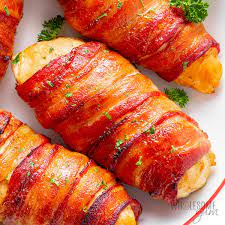

This bacon wrapped chicken breast is a simple recipe using only three ingredients and minimal effort. Just be sure to plan ahead! It can take some time to marinate and that is where it gets all of its flavor. After that simply cook and enjoy.
- 4-8 small boneless, skinless chicken breasts
- 1 slice of bacon per piece of chicken
- At least 20oz of zesty Italian dressing
- Rinse the chicken breast thoroughly and pat dry.
- Place chicken breast in a bowl or pan large enough to contain them while leaving room for the dressing.
- Pour the Itlaian dressing into the container until the chicken breast is completely covered. Mix it around if needed to ensure every surface is coated.
- Let the chicken breast marinate overnight or for at least 8 hours.
- A little helpful trick is to start soaking some toothpicks in water about 30 minutes before you take the chicken out to cook.
- Once marinated rinse the dressing off of the chicken and pat it dry, then lay it out on the pan you plan to cook it on.
- Wrap each piece of chicken in a slice of bacon. You can use the soaked toothpicks to pin the ends of the bacon in place or wrap them so the ends are both on one side and set the chicken back in the pan with that side down.
- Bake the chicken in the oven at 400 degrees for 20-25 minutes.
- Let rest for 5 minutes and serve!